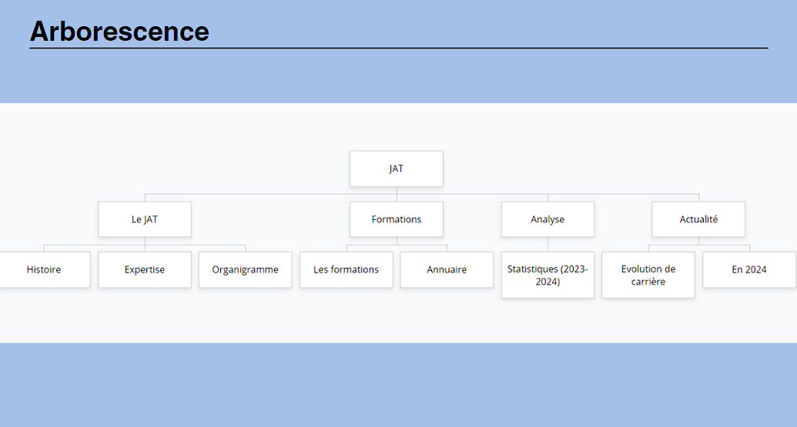
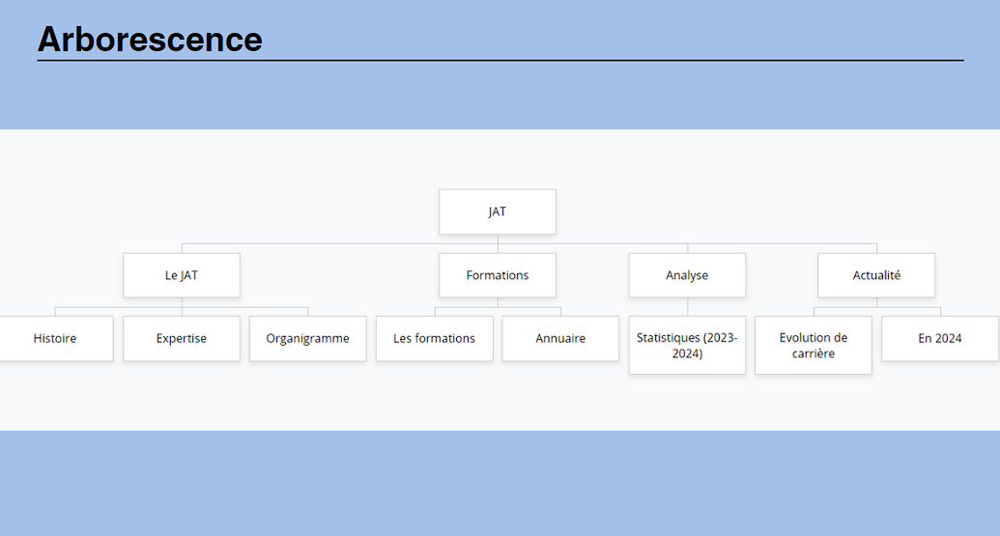
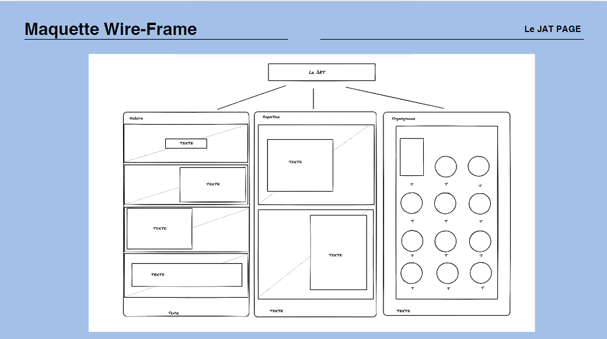
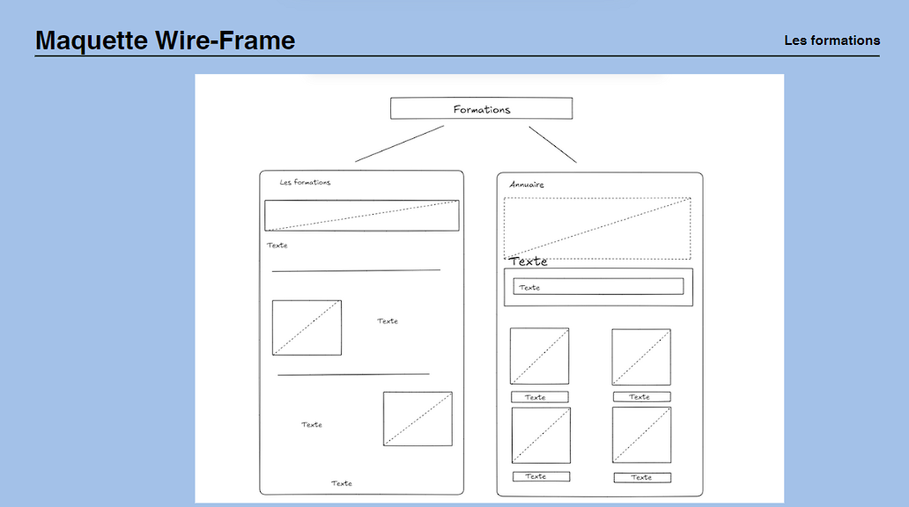
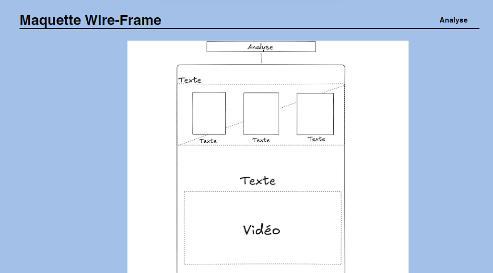
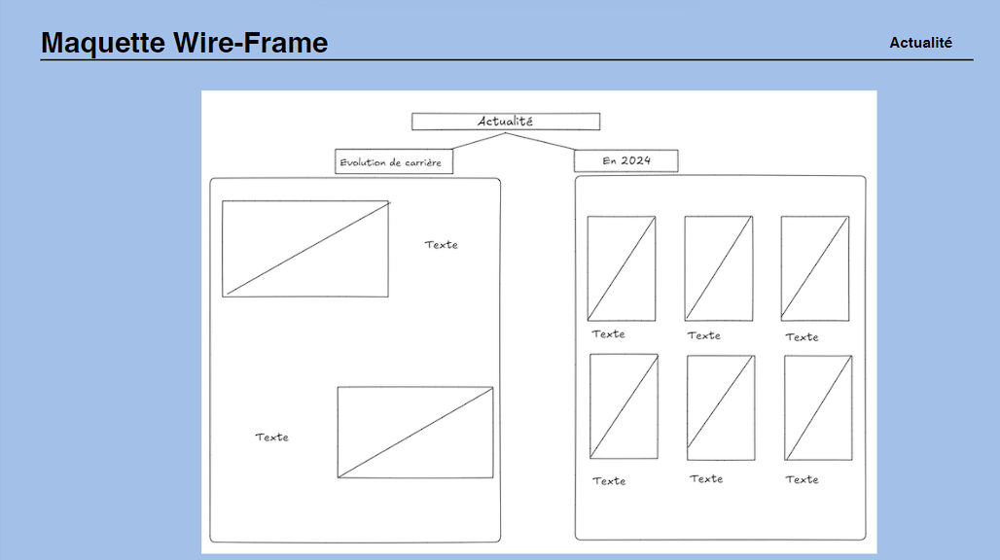
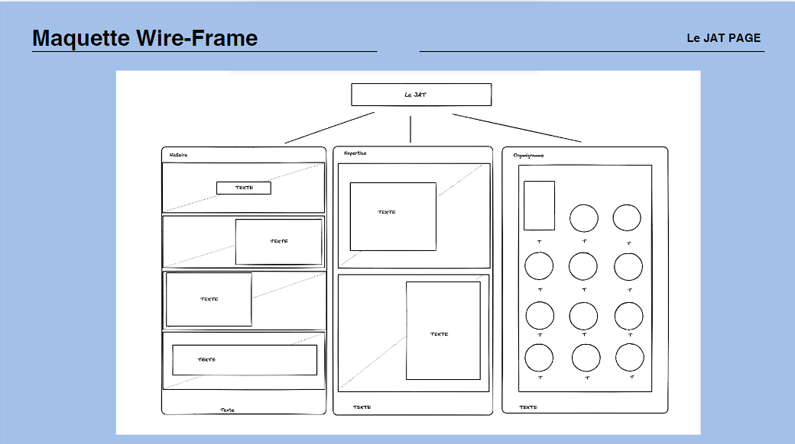
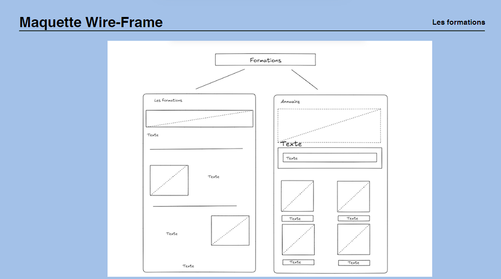
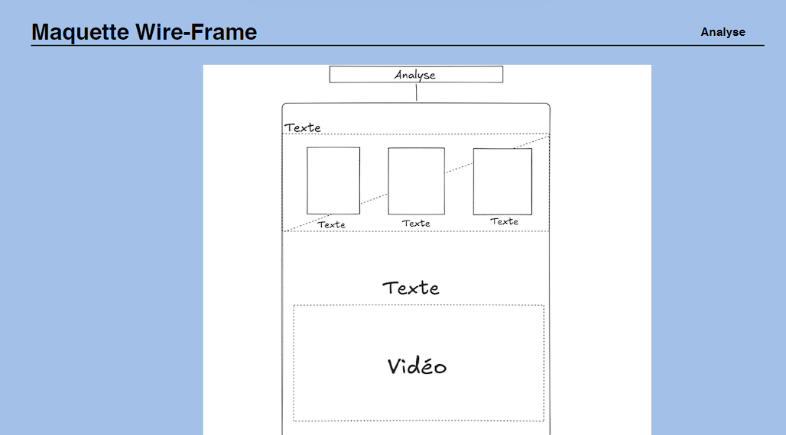
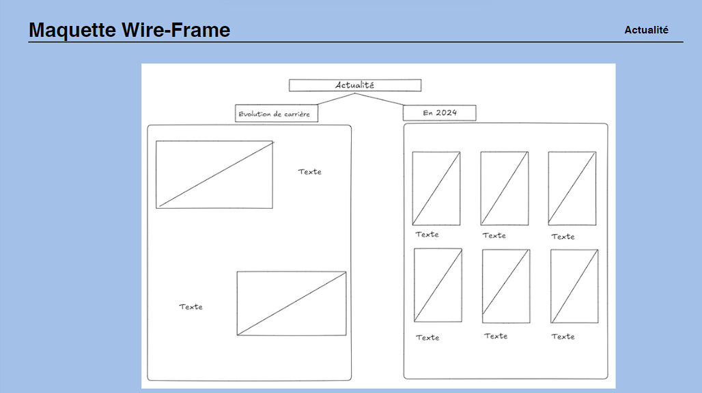

Projets Appliqués

JAT
 

 








JAT (Les Jeunes au Travail)
En octobre 2024, nous avons été invités à créer une association ainsi que son site web, dans le but de mettre en pratique nos compétences graphiques et techniques. Ce projet m’a permis de renforcer mes aptitudes tant techniques que créatives, tout en approfondissant ma réflexion sur l’histoire des couleurs, la conception du logo et la charte graphique, des éléments essentiels pour la réussite d’un projet. Aujourd'hui, je suis en mesure d’identifier les erreurs passées, ce qui me permet de proposer un site plus ergonomique et responsive.